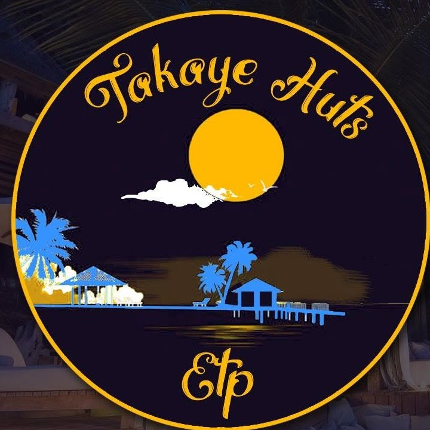

HOLIDAY HOMES
A welcoming home away from home
Holiday apartments, villas and cottages for couples, families and groups.
Ask about availability ↗
TAKAYE HUTSReal Estate • Holiday StaysWELCOME TO TAKAYE HUTS
Handpicked holiday homes and property solutions along Kenya’s beautiful coast — for weekend escapes, family holidays, longer stays and new opportunities.
Your stay. Your story. Our coast.
A COASTAL PROPERTY PARTNER
Takaye Huts is a registered Kenyan real estate enterprise offering handpicked holiday homes and property solutions along Kenya’s coast. From beachside villas and cosy cottages to modern apartments, we make it easy to find a place that feels like yours.
FIND YOUR KIND OF GETAWAY
Comfortable, well-kept and fully furnished stays for the moments that matter.
Holiday apartments, villas and cottages for couples, families and groups.
Ask about availability ↗
Commercial and residential options for businesses, investors and long-term residents.
Discuss your needs ↗
Welcoming venues for conferences, retreats, workshops and celebrations.
Find a venue ↗EXPLORE KENYA’S COAST
Tell us where you would like to be — we’ll help you explore suitable options.
MORE THAN A PLACE TO STAY
Discover the coast beyond your doorstep — from dhow sailing at sunset and snorkelling in marine parks to guided visits to historic sites such as Gedi Ruins and Vasco da Gama Pillar.
Plan your coastal stay ↗WHY TAKAYE HUTS
A team that lives and works on the coast.
Simple enquiries and straightforward booking conversations.
Properties cared for with guest comfort in mind.
Helpful communication from enquiry through check-out.
LET’S FIND YOUR PLACE
Share your dates, destination or property needs and the Takaye Huts team can help you take the next step.